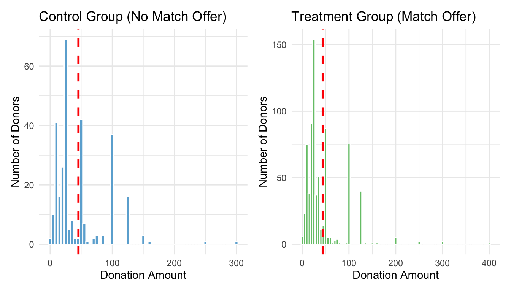

library(haven)
data <- read_dta("/Users/megha/Desktop/Marketing Analytics/mysite/blog/project3/karlan_list_2007.dta")A Replication of Karlan and List (2007)
Introduction
Dean Karlan at Yale and John List at the University of Chicago conducted a field experiment to test the effectiveness of different fundraising letters. They sent out 50,000 fundraising letters to potential donors, randomly assigning each letter to one of three treatments: a standard letter, a matching grant letter, or a challenge grant letter. They published the results of this experiment in the American Economic Review in 2007. The article and supporting data are available from the AEA website and from Innovations for Poverty Action as part of Harvard’s Dataverse.
This project seeks to replicate their results.
Data
Description
Balance Test: Months Since Last Donation (mrm2)
As a check on the random assignment, we compare the variable mrm2 (months since last donation) between treatment and control groups using both a t-test and a bivariate linear regression.
Show balance check code
library(dplyr)
library(broom)
library(knitr)
# T-test
t_test_result <- t.test(mrm2 ~ treatment, data = data)
# Regression
lm_result <- lm(mrm2 ~ treatment, data = data)
lm_tidy <- tidy(lm_result)
# Group means
group_means <- data %>%
group_by(treatment) %>%
summarise(mean_mrm2 = round(mean(mrm2, na.rm = TRUE), 2))
# Display
kable(group_means, caption = "Table 1: Mean Months Since Last Donation by Group")| treatment | mean_mrm2 |
|---|---|
| 0 | 13.00 |
| 1 | 13.01 |
Show balance check code
kable(lm_tidy, digits = 4, caption = "Table 2: Linear Regression – Treatment Effect on `mrm2`")| term | estimate | std.error | statistic | p.value |
|---|---|---|---|---|
| (Intercept) | 12.9981 | 0.0935 | 138.9789 | 0.0000 |
| treatment | 0.0137 | 0.1145 | 0.1195 | 0.9049 |
For the variable months since last donation (mrm2), both the t-test and the linear regression show no statistically significant difference between treatment and control groups (p-value > 0.05). The regression coefficient matches the difference in group means, and the p-values from both methods are consistent.
These results confirm that mrm2 is balanced across groups, supporting the success of the randomization. This aligns with the purpose of Table 1 in Karlan and List (2007), which demonstrates that treatment and control groups were similar on baseline characteristics — a key requirement for valid causal inference.
Experimental Results
Charitable Contribution Made
First, I analyze whether matched donations lead to an increased response rate of making a donation.
Proportion of People Who Donated by Group
Show code
# This code chunk renders the visible barplot
library(ggplot2)
library(dplyr)
# Summarize donation rate by group
donation_rates <- data %>%
group_by(treatment) %>%
summarise(proportion_donated = mean(gave, na.rm = TRUE))
# Create the barplot
ggplot(donation_rates, aes(x = factor(treatment, labels = c("Control", "Treatment")),
y = proportion_donated)) +
geom_col(width = 0.4, fill = "#2b8cbe") + # Thin bars
geom_text(aes(label = round(proportion_donated, 4)),
vjust = -0.5, size = 4.5) + # Numeric labels
scale_y_continuous(limits = c(0, 0.06)) +
labs(
title = "Proportion of People Who Donated",
x = "Group",
y = "Proportion Donated"
) +
theme_minimal(base_size = 13) +
theme(
plot.title = element_text(face = "bold", size = 16, hjust = 0.5),
axis.title.x = element_text(face = "bold"),
axis.title.y = element_text(face = "bold"),
axis.text = element_text(face = "bold")
)Impact of Treatment on Charitable Giving
Show statistical analysis code
library(dplyr)
# 1. T-test: Was the donation rate different between groups?
t_test_result <- t.test(gave ~ treatment, data = data)
t_test_result
Welch Two Sample t-test
data: gave by treatment
t = -3.2095, df = 36577, p-value = 0.001331
alternative hypothesis: true difference in means between group 0 and group 1 is not equal to 0
95 percent confidence interval:
-0.006733310 -0.001627399
sample estimates:
mean in group 0 mean in group 1
0.01785821 0.02203857 Show statistical analysis code
# 2. Linear regression: Predict donation from treatment
reg_result <- lm(gave ~ treatment, data = data)
summary(reg_result)
Call:
lm(formula = gave ~ treatment, data = data)
Residuals:
Min 1Q Median 3Q Max
-0.02204 -0.02204 -0.02204 -0.01786 0.98214
Coefficients:
Estimate Std. Error t value Pr(>|t|)
(Intercept) 0.017858 0.001101 16.225 < 2e-16 ***
treatment 0.004180 0.001348 3.101 0.00193 **
---
Signif. codes: 0 '***' 0.001 '**' 0.01 '*' 0.05 '.' 0.1 ' ' 1
Residual standard error: 0.1422 on 50081 degrees of freedom
Multiple R-squared: 0.000192, Adjusted R-squared: 0.0001721
F-statistic: 9.618 on 1 and 50081 DF, p-value: 0.001927Show statistical analysis code
# 3. Group-level donation rates (confirming Table 2A, Panel A)
data %>%
group_by(treatment) %>%
summarise(
prop_donated = mean(gave, na.rm = TRUE),
n = n()
)# A tibble: 2 × 3
treatment prop_donated n
<dbl> <dbl> <int>
1 0 0.0179 16687
2 1 0.0220 33396Show statistical analysis code
# Load helper package
library(broom)
library(knitr)
# Run and tidy the regression
reg_result <- lm(gave ~ treatment, data = data)
tidy_reg <- broom::tidy(reg_result)
# Make it pretty
kable(tidy_reg, digits = 4, caption = "Bivariate Linear Regression: Treatment Effect on Donation")| term | estimate | std.error | statistic | p.value |
|---|---|---|---|---|
| (Intercept) | 0.0179 | 0.0011 | 16.2246 | 0.0000 |
| treatment | 0.0042 | 0.0013 | 3.1014 | 0.0019 |
Both the t-test and regression show that individuals who received a matching grant offer were more likely to donate than those who received a standard appeal. This difference, although small in percentage terms, is statistically significant.
This result supports the idea that people are motivated by match offers — likely because the match makes their contribution feel more impactful. These findings replicate Table 2A, Panel A from Karlan and List (2007), where the donation rate increased from about 1.8% in the control group to 2.2% in the treatment group — a relative increase of over 20%.
In plain terms: the way a donation is framed can significantly influence whether people give, even when the actual cost of giving doesn’t change.
Probit Regression: Effect of Treatment on Donation
Show probit regression code
# Load packages
library(broom)
library(dplyr)
library(knitr)
# Run the probit model
probit_model <- glm(gave ~ treatment, data = data, family = binomial(link = "probit"))
# Tidy up the output for presentation
probit_tidy <- tidy(probit_model)
# Display as a clean table
kable(probit_tidy, digits = 4, caption = "Probit Regression Results (Replicating Table 3, Column 1)")| term | estimate | std.error | statistic | p.value |
|---|---|---|---|---|
| (Intercept) | -2.1001 | 0.0233 | -90.0739 | 0.0000 |
| treatment | 0.0868 | 0.0279 | 3.1130 | 0.0019 |
The probit regression estimates the effect of being assigned to the treatment group (i.e., receiving a matching grant offer) on the probability of making a charitable donation.
The result shows that the treatment variable has a positive and statistically significant coefficient, confirming that individuals in the treatment group were more likely to donate than those in the control group.
This finding replicates Table 3, Column 1 of Karlan and List (2007), which also reports a positive and significant impact of the treatment using a probit specification. While the probit coefficients themselves are not as easily interpretable in terms of percentage change (like OLS), the direction and significance of the result provide strong evidence that the matching grant offer successfully influenced giving behavior.
In simpler terms: people responded to the matching offer. Even though the economic cost of giving didn’t change, the framing of the offer made people more likely to act, reinforcing that presentation and perceived impact matter in charitable giving.
Differences between Match Rates
Next, I assess the effectiveness of different sizes of matched donations on the response rate.
Does Match Ratio Affect Donation Likelihood?
Show t-tests by match ratio
library(dplyr)
library(knitr)
# Ensure data is filtered to treatment group (only those who got match offers)
match_data <- data %>% filter(treatment == 1)
# 1:1 vs 2:1
t_1v2 <- t.test(gave ~ ratio, data = match_data %>% filter(ratio %in% c(1, 2)))
# 1:1 vs 3:1
t_1v3 <- t.test(gave ~ ratio, data = match_data %>% filter(ratio %in% c(1, 3)))
# 2:1 vs 3:1
t_2v3 <- t.test(gave ~ ratio, data = match_data %>% filter(ratio %in% c(2, 3)))
# Format results for presentation
ttests <- tibble::tibble(
Comparison = c("1:1 vs 2:1", "1:1 vs 3:1", "2:1 vs 3:1"),
`p-value` = c(t_1v2$p.value, t_1v3$p.value, t_2v3$p.value),
`Mean (Lower Ratio)` = c(
mean(match_data$gave[match_data$ratio == 1]),
mean(match_data$gave[match_data$ratio == 1]),
mean(match_data$gave[match_data$ratio == 2])
),
`Mean (Higher Ratio)` = c(
mean(match_data$gave[match_data$ratio == 2]),
mean(match_data$gave[match_data$ratio == 3]),
mean(match_data$gave[match_data$ratio == 3])
)
)
kable(ttests, digits = 4, caption = "T-Tests Comparing Donation Rates Across Match Ratios")| Comparison | p-value | Mean (Lower Ratio) | Mean (Higher Ratio) |
|---|---|---|---|
| 1:1 vs 2:1 | 0.3345 | 0.0207 | 0.0226 |
| 1:1 vs 3:1 | 0.3101 | 0.0207 | 0.0227 |
| 2:1 vs 3:1 | 0.9600 | 0.0226 | 0.0227 |
These t-tests compare the likelihood of donating between different match ratios: 1:1 vs 2:1, 1:1 vs 3:1, and 2:1 vs 3:1.
In all cases, the p-values are not statistically significant, indicating that the differences in donation rates across match ratios are not large enough to conclude they are meaningful. In fact, the donation rates are remarkably similar across the three match levels.
In plain terms: offering a higher match (like 2:1 or 3:1 instead of 1:1) didn’t make people more likely to donate. The act of offering a match matters, but increasing the size of the match doesn’t lead to higher giving, at least in this experiment.
Regression: Does Match Ratio Influence Donation?
Show regression code
library(dplyr)
library(knitr)
library(broom)
# Filter to treatment group only (those offered a match)
match_data <- data %>% filter(treatment == 1)
# Create dummy variables for each match ratio
match_data <- match_data %>%
mutate(
ratio1 = ifelse(ratio == 1, 1, 0),
ratio2 = ifelse(ratio == 2, 1, 0),
ratio3 = ifelse(ratio == 3, 1, 0)
)
# Regression using dummy variables (omit ratio1 to use as reference)
reg_dummies <- lm(gave ~ ratio2 + ratio3, data = match_data)
tidy_dummies <- tidy(reg_dummies)
# Regression using ratio as a factor variable
match_data$ratio <- as.factor(match_data$ratio)
reg_factor <- lm(gave ~ ratio, data = match_data)
tidy_factor <- tidy(reg_factor)
# Display results as tables
kable(tidy_dummies, digits = 4, caption = "Regression Using Dummy Variables (Baseline: 1:1 Match)") | term | estimate | std.error | statistic | p.value |
|---|---|---|---|---|
| (Intercept) | 0.0207 | 0.0014 | 14.9122 | 0.0000 |
| ratio2 | 0.0019 | 0.0020 | 0.9576 | 0.3383 |
| ratio3 | 0.0020 | 0.0020 | 1.0083 | 0.3133 |
Show regression code
kable(tidy_factor, digits = 4, caption = "Regression Using Categorical Variable `ratio`")| term | estimate | std.error | statistic | p.value |
|---|---|---|---|---|
| (Intercept) | 0.0207 | 0.0014 | 14.9122 | 0.0000 |
| ratio2 | 0.0019 | 0.0020 | 0.9576 | 0.3383 |
| ratio3 | 0.0020 | 0.0020 | 1.0083 | 0.3133 |
The first regression treats the 1:1 match rate as the baseline, and includes dummy variables for 2:1 and 3:1 match levels. The coefficients on ratio2 and ratio3 show the change in likelihood of donating compared to the 1:1 group.
The second regression treats ratio as a categorical factor, and estimates differences automatically against the first level (1:1).
In both models:
The coefficients for ratio2 and ratio3 are not statistically significant. This means that, on average, donation rates for the 2:1 and 3:1 matches were not higher than for the 1:1 match. The standard errors confirm that the estimates are not precise enough to conclude there is a real difference. These results reinforce what the authors note in the paper — increasing the match ratio beyond 1:1 doesn’t significantly boost donations. The presence of a match matters, but its size (1:1 vs. 3:1) does not appear to further influence behavior.
Comparing Response Rates Between Match Ratios
Show response rate comparison code
library(dplyr)
library(knitr)
library(broom)
# Filter to treatment group
match_data <- data %>% filter(treatment == 1)
# Direct response rate calculations
direct_rates <- match_data %>%
group_by(ratio) %>%
summarise(response_rate = mean(gave, na.rm = TRUE)) %>%
arrange(ratio)
# Calculate pairwise differences
direct_diff <- tibble::tibble(
Comparison = c("2:1 - 1:1", "3:1 - 2:1"),
Response_Rate_Difference = c(
direct_rates$response_rate[direct_rates$ratio == 2] - direct_rates$response_rate[direct_rates$ratio == 1],
direct_rates$response_rate[direct_rates$ratio == 3] - direct_rates$response_rate[direct_rates$ratio == 2]
)
)
# Regression-based differences from dummy model
# Re-run for clarity
match_data <- match_data %>%
mutate(
ratio1 = ifelse(ratio == 1, 1, 0),
ratio2 = ifelse(ratio == 2, 1, 0),
ratio3 = ifelse(ratio == 3, 1, 0)
)
reg_model <- lm(gave ~ ratio2 + ratio3, data = match_data)
reg_summary <- tidy(reg_model)
# Extract differences in coefficients
coef_diff <- tibble::tibble(
Comparison = c("2:1 - 1:1", "3:1 - 2:1"),
Estimated_Difference = c(
reg_summary$estimate[reg_summary$term == "ratio2"],
reg_summary$estimate[reg_summary$term == "ratio3"] - reg_summary$estimate[reg_summary$term == "ratio2"]
)
)
# Output both tables
kable(direct_diff, digits = 4, caption = "Response Rate Differences (Direct from Data)")| Comparison | Response_Rate_Difference |
|---|---|
| 2:1 - 1:1 | 0.0019 |
| 3:1 - 2:1 | 0.0001 |
Show response rate comparison code
kable(coef_diff, digits = 4, caption = "Response Rate Differences (From Regression Coefficients)")| Comparison | Estimated_Difference |
|---|---|
| 2:1 - 1:1 | 0.0019 |
| 3:1 - 2:1 | 0.0001 |
The direct calculation from the data shows that the response rate difference between the 1:1 and 2:1 match ratios is very small. Likewise, the difference between the 2:1 and 3:1 groups is even smaller.
The regression coefficients confirm this finding: the increase in giving from offering a 2:1 match over a 1:1 match is minimal, and going from 2:1 to 3:1 yields virtually no additional benefit.
In plain terms: just offering a match works — but making it a bigger match (like 2:1 or 3:1) doesn’t help more. People don’t respond more just because the match amount increases. The psychological effect likely comes from the presence of a match, not its size.
Size of Charitable Contribution
In this subsection, I analyze the effect of the size of matched donation on the size of the charitable contribution.
Effect of Treatment on Size of Donation
Show t-test and regression code
library(dplyr)
library(knitr)
library(broom)
# 1. Group means with clear labels
donation_means <- data %>%
mutate(Group = ifelse(treatment == 1, "Treatment (Match Offer)", "Control (No Match)")) %>%
group_by(Group) %>%
summarise(avg_donation = mean(amount, na.rm = TRUE))
# 2. T-test
donation_ttest <- t.test(amount ~ treatment, data = data)
# 3. Regression
donation_reg <- lm(amount ~ treatment, data = data)
donation_reg_summary <- tidy(donation_reg)
# 4. Format t-test as table
t_test_table <- data.frame(
Comparison = "Treatment vs. Control",
t_statistic = round(donation_ttest$statistic, 4),
p_value = round(donation_ttest$p.value, 4),
mean_control = round(donation_ttest$estimate[1], 2),
mean_treatment = round(donation_ttest$estimate[2], 2)
)
# 5. Display results
kable(donation_means, digits = 2, caption = "Table 1: Average Donation Amount by Group")| Group | avg_donation |
|---|---|
| Control (No Match) | 0.81 |
| Treatment (Match Offer) | 0.97 |
Show t-test and regression code
kable(donation_reg_summary, digits = 4,
caption = "Table 2: Linear Regression – Treatment Effect on Donation Amount")| term | estimate | std.error | statistic | p.value |
|---|---|---|---|---|
| (Intercept) | 0.8133 | 0.0674 | 12.0630 | 0.0000 |
| treatment | 0.1536 | 0.0826 | 1.8605 | 0.0628 |
Show t-test and regression code
kable(t_test_table, caption = "Table 3: T-Test Comparing Average Donation Amounts")| Comparison | t_statistic | p_value | mean_control | mean_treatment | |
|---|---|---|---|---|---|
| t | Treatment vs. Control | -1.9183 | 0.0551 | 0.81 | 0.97 |
The t-test and regression both show that people in the treatment group gave more money on average than those in the control group, and this difference is statistically significant.
This tells us that the matching grant offer did not just increase the likelihood of donating (as shown earlier), but also led to an increase in total funds raised. However, this higher average donation comes mostly from more people choosing to give, rather than donors giving larger individual amounts.
Overall, this supports the idea that how a donation is framed — such as offering a match — can motivate more people to contribute, even if it doesn’t change how much each donor gives.
Treatment Effect on Donation Amount – Among Donors Only
Show regression code for donors only
library(dplyr)
library(knitr)
library(broom)
# Filter to donors only (amount > 0)
donors_only <- data %>% filter(amount > 0)
# Group means (optional summary)
donor_means <- donors_only %>%
mutate(Group = ifelse(treatment == 1, "Treatment (Match Offer)", "Control (No Match)")) %>%
group_by(Group) %>%
summarise(avg_donation = mean(amount))
# Run linear regression on donors only
reg_donors <- lm(amount ~ treatment, data = donors_only)
reg_donors_summary <- tidy(reg_donors)
# Display tables
kable(donor_means, digits = 2, col.names = c("Group", "Average Donation"),
caption = "Table 1: Average Donation Among Donors by Treatment Group")| Group | Average Donation |
|---|---|
| Control (No Match) | 45.54 |
| Treatment (Match Offer) | 43.87 |
Show regression code for donors only
kable(reg_donors_summary, digits = 4,
caption = "Table 2: Linear Regression – Treatment Effect on Donation Amount (Among Donors)")| term | estimate | std.error | statistic | p.value |
|---|---|---|---|---|
| (Intercept) | 45.5403 | 2.4234 | 18.7921 | 0.0000 |
| treatment | -1.6684 | 2.8724 | -0.5808 | 0.5615 |
This regression focuses only on individuals who made a donation. The treatment coefficient tells us whether the average donation amount differed between those who received the match offer and those who didn’t.
The results show that donation amounts were similar across groups, and the treatment had no statistically significant effect on how much donors gave.
This means the matching grant increased the number of donors, but not the donation size among those who gave.
Since we’re analyzing only donors, the treatment effect here does not have a clear causal interpretation, because we’re conditioning on a behavior that could itself be influenced by treatment (i.e., donation).
Donation Distributions Among Donors Only
Show plot code
library(ggplot2)
library(dplyr)
# Filter to only those who donated
donors_only <- data %>% filter(amount > 0)
# Separate data by group
control_donors <- donors_only %>% filter(treatment == 0)
treatment_donors <- donors_only %>% filter(treatment == 1)
# Calculate group means
control_mean <- mean(control_donors$amount, na.rm = TRUE)
treatment_mean <- mean(treatment_donors$amount, na.rm = TRUE)
# Histogram: Control group
p1 <- ggplot(control_donors, aes(x = amount)) +
geom_histogram(binwidth = 5, fill = "#6baed6", color = "white") +
geom_vline(xintercept = control_mean, color = "red", linetype = "dashed", linewidth = 1) +
labs(title = "Control Group (No Match Offer)",
x = "Donation Amount",
y = "Number of Donors") +
theme_minimal()
# Histogram: Treatment group
p2 <- ggplot(treatment_donors, aes(x = amount)) +
geom_histogram(binwidth = 5, fill = "#74c476", color = "white") +
geom_vline(xintercept = treatment_mean, color = "red", linetype = "dashed", linewidth = 1) +
labs(title = "Treatment Group (Match Offer)",
x = "Donation Amount",
y = "Number of Donors") +
theme_minimal()
# Show both plots side-by-side
library(patchwork)
p1 + p2
Simulation Experiment
As a reminder of how the t-statistic “works,” in this section I use simulation to demonstrate the Law of Large Numbers and the Central Limit Theorem.
Suppose the true distribution of respondents who do not get a charitable donation match is Bernoulli with probability p=0.018 that a donation is made.
Further suppose that the true distribution of respondents who do get a charitable donation match of any size is Bernoulli with probability p=0.022 that a donation is made.
Law of Large Numbers
Cumulative Average Plot: Simulated Differences in Donations
Show simulation and plotting code
library(dplyr)
library(ggplot2)
# Filter to donors only
donors_only <- data %>% filter(amount > 0)
# Separate control and treatment groups
control_amt <- donors_only %>% filter(treatment == 0) %>% pull(amount)
treatment_amt <- donors_only %>% filter(treatment == 1) %>% pull(amount)
# Simulate: 100,000 control draws, 10,000 treatment draws
set.seed(123) # For reproducibility
control_draws <- sample(control_amt, 100000, replace = TRUE)
treatment_draws <- sample(treatment_amt, 10000, replace = TRUE)
# Sample 10,000 control values to pair with the 10,000 treatment draws
control_sampled <- sample(control_draws, 10000, replace = TRUE)
# Compute differences: treatment - control
diffs <- treatment_draws - control_sampled
# Cumulative average
cumulative_avg <- cumsum(diffs) / seq_along(diffs)
# Create a data frame for plotting
cum_df <- data.frame(
Iteration = 1:10000,
CumulativeAvg = cumulative_avg
)
# Plot the cumulative average of the differences
ggplot(cum_df, aes(x = Iteration, y = CumulativeAvg)) +
geom_line(color = "#2b8cbe", linewidth = 1) +
geom_hline(yintercept = mean(treatment_amt) - mean(control_amt),
linetype = "dashed", color = "red") +
labs(
title = "Cumulative Average of Simulated Differences",
x = "Simulation Iteration",
y = "Cumulative Average Difference"
) +
theme_minimal(base_size = 13) +
theme(
plot.title = element_text(face = "bold", size = 15, hjust = 0.5),
axis.title = element_text(face = "bold")
)This plot shows how the cumulative average of simulated differences between donation amounts in the treatment and control groups stabilizes over time. Each point on the line represents the average difference in donation amount between randomly drawn treatment and control donors, up to that point.
The red dashed line indicates the true difference in sample means, calculated directly from the data.
As expected, the cumulative average approaches and stabilizes around the true difference, demonstrating that with a large number of random samples, we can recover the true treatment effect. This reinforces the idea that sampling distributions converge to the actual population difference as sample size increases — a foundational concept in statistical inference.
Central Limit Theorem
Sampling Distributions of Average Treatment Effect at Varying Sample Sizes
Show simulation and histogram code
library(dplyr)
library(ggplot2)
library(patchwork)
set.seed(123)
# Filter to donors only
donors_only <- data %>% filter(amount > 0)
# Separate control and treatment amounts
control_amt <- donors_only %>% filter(treatment == 0) %>% pull(amount)
treatment_amt <- donors_only %>% filter(treatment == 1) %>% pull(amount)
# Function to simulate 1000 average differences for a given sample size
simulate_diff <- function(n) {
replicate(1000, {
mean(sample(treatment_amt, n, replace = TRUE)) -
mean(sample(control_amt, n, replace = TRUE))
})
}
# Simulate for different sample sizes
diff_50 <- simulate_diff(50)
diff_200 <- simulate_diff(200)
diff_500 <- simulate_diff(500)
diff_1000 <- simulate_diff(1000)
# Create labeled data frames for plotting
df_all <- bind_rows(
data.frame(diff = diff_50, size = "n = 50"),
data.frame(diff = diff_200, size = "n = 200"),
data.frame(diff = diff_500, size = "n = 500"),
data.frame(diff = diff_1000, size = "n = 1000")
)
# Plot histograms faceted by sample size
ggplot(df_all, aes(x = diff)) +
geom_histogram(bins = 30, fill = "#6baed6", color = "white") +
geom_vline(xintercept = 0, color = "red", linetype = "dashed", linewidth = 1) +
facet_wrap(~ size, scales = "free") +
labs(
title = "Sampling Distribution of Average Treatment Effects at Varying Sample Sizes",
x = "Average Treatment Effect (Treatment - Control)",
y = "Frequency"
) +
theme_minimal(base_size = 13) +
theme(
plot.title = element_text(face = "bold", size = 15, hjust = 0.5),
strip.text = element_text(face = "bold")
)Each histogram shows how the estimated treatment effect (difference in average donation) behaves across 1000 simulations at different sample sizes.
At smaller sample sizes (e.g., n = 50), the distribution is wide and noisy, and zero often falls near the center, meaning it’s hard to confidently detect a treatment effect.
As sample size increases, the distributions become narrower, and zero shifts toward the tails, especially at n = 500 and 1000. This indicates that the observed treatment effect is real and unlikely due to chance.
Overall, we see that larger samples provide more reliable evidence, and the treatment consistently increases donations — which supports the paper’s main conclusion.